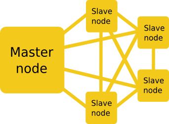
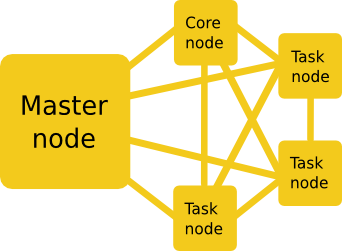

Elephant in the cloud - data analysis using Amazon Elastic MapReduce
Paweł Sołtysek
Amazon Elastic MapReduce (EMR)
EMR ACCESS INTERFACES
- Web console
- AWS SDK
- REST API
- Command line (CLI)
Nodes general classification
- Master (always 1)
- Slave (0 or more)

Exercise 1
Create simple cluster
Exercise 2
List cluster details
Exercise 3
Add plain MapReduce step
Exercise 4
Terminate cluster
Exercise 5
Create transient cluster with Cascading step
Exercise 6
Create cluster with Scalding step
Nodes detailed classification

Exercise 7
Create Hive cluster with sample step
Exercise 8
Create Impala cluster
Exercise 9
Run sample query against Impala via JDBC
Exercise 10
Scale out cluster
Exercise 11
Scale in cluster